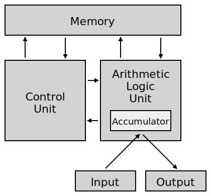
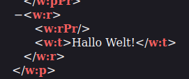

- Was ist ein Computer?
- Computer Architektur
- Daten Kodierung
- Eingebettete Systeme
- Algorithmen
Kurs 23020
Thomas Irgang
Was ist ein Computer?
Inhalte
Was ist ein Computer?
- Tag 1: Was ist ein Computer?
- Tag 2: Wie funktioniert das Internet?
Tag 1
Was ist ein Computer?
Welches dieser Geräte ist ein Computer?
- Notebook
- Smartphone
- Sprachassistent
- Raspberry Pi
- Waschmaschine
- Kaffeemaschine
Von © Raimond Spekking / CC BY-SA 4.0 (via Wikimedia Commons)
Acabashi, CC BY-SA 4.0 , via Wikimedia Commons
Frank C. Müller, CC BY-SA 3.0 , via Wikimedia Commons
Von © Raimond Spekking / CC BY-SA 4.0 (via Wikimedia Commons)

Johann H. Addicks, CC BY-SA 3.0
Wikipedia: Computer
Was ist ein Computer?
Ein Computer [...] ist ein Gerät, das mittels programmierbarer Rechenvorschriften Daten verarbeitet.
Computer sind heute in allen Bereichen des täglichen Lebens vorzufinden, meistens in spezialisierten Varianten, die auf einen vorliegenden Anwendungszweck zugeschnitten sind. So dienen integrierte Kleinstcomputer [...] zur Steuerung von Alltagsgeräten wie Waschmaschinen [...]; in modernen Automobilen dienen sie [...] zur Anzeige von Fahrdaten und steuern in „Fahrassistenten“ diverse Manöver selbst.
Welches dieser Geräte ist ein Computer?
Fast jedes moderne Gerät beinhaltet mindestens einen Computer in From eines integrierten Kleinstcomputer (Embedded Device)
Von © Raimond Spekking / CC BY-SA 4.0 (via Wikimedia Commons)
Acabashi, CC BY-SA 4.0 , via Wikimedia Commons
Frank C. Müller, CC BY-SA 3.0 , via Wikimedia Commons
Von © Raimond Spekking / CC BY-SA 4.0 (via Wikimedia Commons)
Johann H. Addicks, CC BY-SA 3.0
Was ist ein Computer?
Computer Architektur
Computer Architektur
Was ist ein Computer?
- Fast alle aktuellen Computer verwenden die Von-Neumann-Architektur
https://de.wikipedia.org/wiki/Von-Neumann-Architektur - Programme und Daten werden in einem gemeinsamen Speicher abgelegt

Chris-martin, Aeroid, CC BY-SA 3.0
Von-Neumann-Architektur
Computer Architektur
- CPU:
- Rechenwerk (ALU)
- Steuerwerk (Control Unit)
- Bus System:
- Speicherwerk
(RAM, Festplatte) - I/O Unit
(Tastatur, Bildschirm)
- Speicherwerk
Chris-martin, Aeroid, CC BY-SA 3.0
CPU
Computer Architektur
- Central Processing Unit (CPU)
- z.B. Intel Core i, AMD Ryzen, Qualcomm Snapdragon, Apple M2
ElooKoN, CC BY-SA 4.0 , via Wikimedia Commons
Arbeitsspeicher
Computer Architektur
- Arbeitsspeicher (RAM)
- Flüchtiger Speicher
verliert Daten ohne Strom - Typische Geschwindigkeit: ~15 GB/s
- Typische Größen: 8 GB, 16 GB
- GB: Gigabyte (1000 MB)

Jacek Halicki, CC BY-SA 4.0 , via Wikimedia Commons
SSD
Computer Architektur
- Solid State Disk (SSD)
- Typische Geschwindigkeit: ~2.5 GB/s
- Typische Größen: 512 GB, 1 TB
- TB: Terrabyte (1000GB)
- Persistenter Speicher
behält Daten ohne Strom

D-Kuru, CC BY-SA 4.0 , via Wikimedia Commons
Festplatte
Computer Architektur
- Hard Disk (HDD)
- langsamer als SSDs, aber günstiger pro GB
- Typische Geschwindigkeit: ~0.5 GB/s
- Typische Größen: 2 TB, 4 TB
- Persistenter Speicher
behält Daten ohne Strom
Christian Jansky, CC BY-SA 3.0 , via Wikimedia Commons
Was ist ein Computer?
Wie arbeitet ein Computer?
Was ist ein Programm?
Wie arbeitet ein Computer?
- lineare Liste von Befehlen
- auf dem persistenten Speicher (SSD, HDD) abgelegt
- verarbeiten Daten von Eingabegeräten oder dem Speicher
from multiprocessing import cpu_count
# get the number of logical cpu cores
n_cores = cpu_count()
# report the number of logical cpu cores
print(f'Number of Logical CPU cores: {n_cores}')
Befehle
Wie arbeitet ein Computer?
- CPU verarbeitet Befehle
- Befehle aus dem RAM ausgeführt
- Befehle werden linear abgearbeitet
- Befehle haben eine geringe Komplexität (Addition, Subtraktion, Vergleich)

https://de.wikibooks.org/wiki/Assembler-Programmierung_f%C3%BCr_x86-Prozessoren/_Befehlsliste
Programmausführung
Wie arbeitet ein Computer?
- CPU hat einen lokalen Status (Register, ...)
- Programm Counter (PC) zeigt auf den aktuellen Befehl
- Befehle ins RAM geladen
- Befehle können Daten und CPU Status ändern
- Sprungbefehle realisieren Entscheidungen
_-_Start.svg.png)
Onlinecontributorguy, CC BY-SA 4.0 , via Wikimedia Commons
Was ist ein Computer?
Datenkodierung
Binäre Daten
Datenkodierung
- Computer kennen nur 0 und 1
- Nachricht (Syntax): Folge von 0en und 1en
- Information (Semantik): Bedeutung der Nachricht
Graph+sas, CC BY-SA 4.0 , via Wikimedia Commons
Daten Darstellung
Datenkodierung
- Programme interpretieren und verarbeiten Daten
- Darstellung ist auf einen Anwendungsfall zugeschnitten
- Darstellung ist unvollständig
Word Dokumente
Datenkodierung
- Word-Dokumente sind zip-Dateien
- Experiment: Dokument in zip umbenennen

Word Dokumente
Datenkodierung
- Word-Dokumente können Änderungshistorie beinhalten
- Word-Dokumente haben Metadaten

https://www.metadata2go.com/
Was ist ein Computer?
Datenkodierung
Zahlensysteme
Dualsystem (Binärsystem)
Zahlensysteme
- Wertigkeit der Stellen: $2^i$
- $101_2 $
$= 1 * 4 + 0 * 2 + 1 * 1 $
$= 5_{10}$

User000name, CC BY-SA 4.0 , via Wikimedia Commons

User000name, CC BY-SA 4.0 , via Wikimedia Commons
Hexadezimalsystem
Zahlensysteme
- Wertigkeit der Stellen: $16^i$
- $10_{16} = 1 * 16 + 0 * 1 = 16_{10}$
- $AF_{16} $
$= 10 * 16 + 15 * 1 $
$= 175_{10}$

Hr.hanafi, CC BY-SA 3.0 , via Wikimedia Commons
User000name, CC BY-SA 4.0 , via Wikimedia Commons
Binär in Hex
Zahlensysteme
- maximaler Wert einer 4-stelligen Binärzahl:
$8+4+2+1=15$ - maximaler Wert einer 1-stelligen Hexadezimalzahl:
$F_{16} = 15$ - 4 Zeichen binär $XXXX_2$
= 1 Zeichen hexadezimal
Binär in Hex
Zahlensysteme
- Binär-Daten lassen sich kompakt Hexadezimal darstellen
- $1100_{2}=12_{10}=A_{16}$
- $1100 0101_{2}$ = 1100 0101 = $A5_{16}$
- 1 Byte = 8 Bit
$XX_{16}$ = $XXXX.XXXX_{2}$
X-Bit Systeme
Zahlensysteme
- X-Bit entspricht der Größe der CPU Register
- Microcontroller: 8-Bit (1 Byte) / 16-Bit
Heutige PCs: 64bit (alte PCs: 32bit) - X-Bit ist die Speicherbandbreite
32bit = max. 4GB RAM
64bit = max. 16 Exabyte (16 Milliarden Gigabyte) RAM
Was ist ein Computer?
Datenkodierung
Datenkodierung als Binärzahlen
Zweierkomplement
Binärdarstellung
- Zahlenraum:
$-2^{n-1}, ... , 0, ... -2^{n-1}$ - 8bit: -127...127
- 32bit: -2.147.483.648 ... 2.147.483.648
- Negative Zahlen: Binärwert invertieren und 1 addieren
- 4 = 0000 0100
invertiert: 1111 1011
1 addieren: 1111 1100 = -4
Grenzen der Darstellung
Binärdarstellung
- Grenzen der Darstellung können zu Problemen führen
- Reddit: Reddit-Kommentare laufen bei 32-Bit über
- Google: l+f: Integer-Überlauf Gangnam-Style


Gleitkommazahlen
Binärdarstellung
- Gleitkommazahlen müssen als Binärmuster darstellt werden
- IEEE 754: $x=$$s$$2^e$$m$
Vorzeichen s (1 bit), Exponent e, Mantisse m
negative Exponenten: Biaswert wird addiert - 32 Bit Darstellung: 3.14
=0 2^1 1.5700000524520874
= 0 1000.0000 10.0100.0111.1010.1110.00010 - Dargestellte Zahl: 3.1399998664855957031250000
Textdarstellung
Binärdarstellung
- Kodierung pro Zeichen
- einfachste Kodierung: ASCII
ein Zeichen pro Byte, sehr kleiner Zeichenraum - aktueller Standard: UTF8
variable Zeichenlänge, (fast) alle Zeichen darstellbar
Textdarstellung
Binärdarstellung
- Text: Hallo, Welt!
ASCII: 48 61 6c 6c 6f 2c 20 57 65 6c 74 21
UTF-8: 48 61 6c 6c 6f 2c 20 57 65 6c 74 21
UTF-16: 0048 0061 006c 006c 006f 002c 0020 0057 0065 006c 0074 0021 - Zeichen üòä
ASCII: Nicht darstellbar
UTF-8: F0 9F 98 8A
UTF-16: D83D DE0A
Bilder
Binärdarstellung
- Bilder werden als Pixel-Raster gespeichert
- Eine Farbe pro Pixel
- Verschiedenen Farbkodierungen, z.B. RGBA
- Einfachste Bildkodierung: BMP
- Übliche Formate:
jpg (verlustbehaftet, Fotos)
png (verlustfrei, Internet)
Guy vandegrift derived this from CNG, (uploaded by Odysses), CC BY-SA 4.0 , via Wikimedia Commons
Bilder Metadaten
Datenkodierung
- exif-Daten
- GPS-Koordinaten
- Kamera-Model
https://www.pic2map.com/rttymb.html
Was ist ein Computer?
Was ist ein Algorithmus?
Wikipedia: Algorithmus
Algorithmen
Ein Algorithmus ist eine eindeutige Handlungsvorschrift zur Lösung eines Problems oder einer Klasse von Problemen.
- Finitheit: endlich beschreibbar
- Ausführbarkeit: jeder Schritt muss (eindeutig) ausführbar sein
- Dynamische Finitheit: darf nur endlich viel Speicher verwenden
- Terminierung: darf nur endlich viele Schritte benötigen
- Determiniertheit: muss unter denselben Voraussetzungen das gleiche Ergebnis liefern
- Determinismus: der nächste Schritt muss zu jedem Zeitpunkt eindeutig sein
penubag, CC BY-SA 3.0 , via Wikimedia Commons
https://de.wikipedia.org/wiki/Algorithmus
Algorithmus in den Medien
Algorithmen
- algorithmische Darstellung von Inhalten (z.B. Posts, Filme, ...)
- Darstellung wird auf Unternehmensziel optimiert
Muḥammad ibn Mūsā al-Ḵwārizmī
Was ist ein Computer?
Embedded Devices, Smart Devices und IoT
Eingebettete Systeme
Was ist ein Computer?
- (kompakter) (Einplatinen-) Computer
- Spezielle Aufgabe
- Eingabe sind häufig Sensoren (Temperatur, ..., Radar)
- Ausgabe sind häufig Aktoren (Motoren, ...)
penubag, CC BY-SA 3.0 , via Wikimedia Commons
https://de.wikipedia.org/wiki/Eingebettetes_System
Smarte Geräte
Was ist ein Computer?
- Vorteile:
- benutzerfreundlicher
- fortgeschrittene Funktionen
- Nachteile:
- Geräte "im Internet" (WLAN) brauchen Updates
- Smarte Geräte sind häufig "Backends" angewiesen
TBWABusted, CC BY 2.0 , via Wikimedia Commons
Was ist ein Computer?
Gustavb, CC BY-SA 3.0
Tag 2

Per A.J. Andersson, CC BY-SA 4.0 , via Wikimedia Commons